The metagam package offers a way to visualize the heterogeneity of the estimated smooth functions over the range of explanatory variables. This will be illustrated here.
We start by simulating 5 datasets using the gamSim() function from mgcv. We use the response \(y\) and the explanatory variable \(x_{2}\), but add an additional shift \(\beta x_{2}^{2}\) where \(\beta_{2}\) differs between datasets, yielding heterogenous data.
library(mgcv)
#> Loading required package: nlme
#> This is mgcv 1.8-33. For overview type 'help("mgcv-package")'.
set.seed(1233)
shifts <- c(0, .5, 1, 0, -1)
datasets <- lapply(shifts, function(x) {
## Simulate data
dat <- gamSim(scale = .1, verbose = FALSE)
## Add a shift
dat$y <- dat$y + x * dat$x2^2
## Return data
dat
})Next, we analyze all datasets, and strip individual participant data.
models <- lapply(datasets, function(dat){
b <- gam(y ~ s(x2, bs = "cr"), data = dat)
strip_rawdata(b)
})Next, we meta-analyze the models. Since we only have a single smooth term, we use type = "response" to get the response function. This is equivalent to using type = "iterms" and intercept = TRUE.
meta_analysis <- metagam(models, type = "response")
#> Loading required package: Matrix
#> Loading 'metafor' package (version 2.4-0). For an overview
#> and introduction to the package please type: help(metafor).Next, we plot the separate estimates together with the meta-analytic fit. We clearly see that dataset 3, which had a positive shift \(\beta=1 x_{2}^2\), lies above the others for \(x_{2}\) close to 1, and opposite for dataset 5.
plot(meta_analysis)
The plotting function for the meta-analysis object is a ggplot2-object, and can thus be altered using standard ggplot syntax. To learn more about customization of ggplot2-objects, please see the ggplot2 documentation.
plot(meta_analysis) +
ggplot2::scale_colour_brewer(palette = "Set1")
We can investigate this further using a heterogeneity plot, which visualizes Cochran’s Q-test (Cochran (1954)) as a function of \(x_{2}\). By default, the test statistic (Q), with 95 % confidence bands, is plotted. We can see that the confidence band for Q is above 0 for \(x_{2}\) larger than about 0.7.
plot_heterogeneity(meta_analysis)
We can also plot the \(p\)-value of Cochran’s Q-test. The dashed line shows the value \(0.05\). The \(p\)-value plot is in full agreement with the Q-statistic plot above: There is evidence that the underlying functions from each dataset are different for values from about 0.7 and above.
plot_heterogeneity(meta_analysis, type = "p")